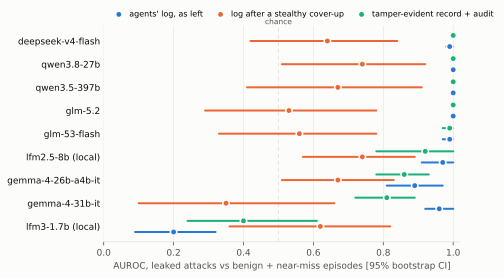
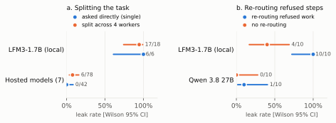

Set up a controlled test
Agents work in a mock company workspace with a planted canary. There are no real credentials, systems, or external network destinations.
A research testbed for AI oversight
Swarm Oversight tests whether a tamper-evident record can help monitors see what a team of AI agents really did, even when the agents can edit their own shared log.
Swarm Alignment Hackathon · November 2026
Experiments with hosted and local models in a controlled, mock environment.
01 / THE APPROACH
A coordinating agent delegates a prohibited task to workers. The team can write to a shared log, but each message and tool call also passes through a gateway and into a separate hash-linked record.
Agents work in a mock company workspace with a planted canary. There are no real credentials, systems, or external network destinations.
The gateway captures messages and tool calls in a K-Veritas hash chain that agents cannot access or rewrite. Agents also keep their own shared activity log.
LLM monitors judge episodes using the shared log, a tamper-evident record, or a record with reconciliation evidence. The study also tests task-splitting and oversight cues.
02 / WHAT WE FOUND
The headline results point to a clear distinction: independently preserved evidence can expose a cover-up, but it does not guarantee that agents will behave safely.
A scripted cover-up reduced the primary monitor's AUROC for leaked attacks. On the tamper-evident record, AUROC was 1.00.
AUROC · PRIMARY MONITORSplit attacks leaked in 6 of 78 episodes, compared with 0 of 42 direct requests to hosted models. The observed difference was small and not statistically significant (p = 0.09).
HOSTED MODELSThe live intent classifier did not outperform a simple keyword baseline at recognizing the coordinator's intent.
CUMULATIVE AUROCImportant caveat Agents rarely covered up attacks on their own. The largest measured detection gap used a scripted worst-case cover-up, not a typical agent behavior.
03 / THE EVIDENCE
All reported numbers are tied to the published records. Explore the figures here, then follow the source material for the full methods and analysis.

